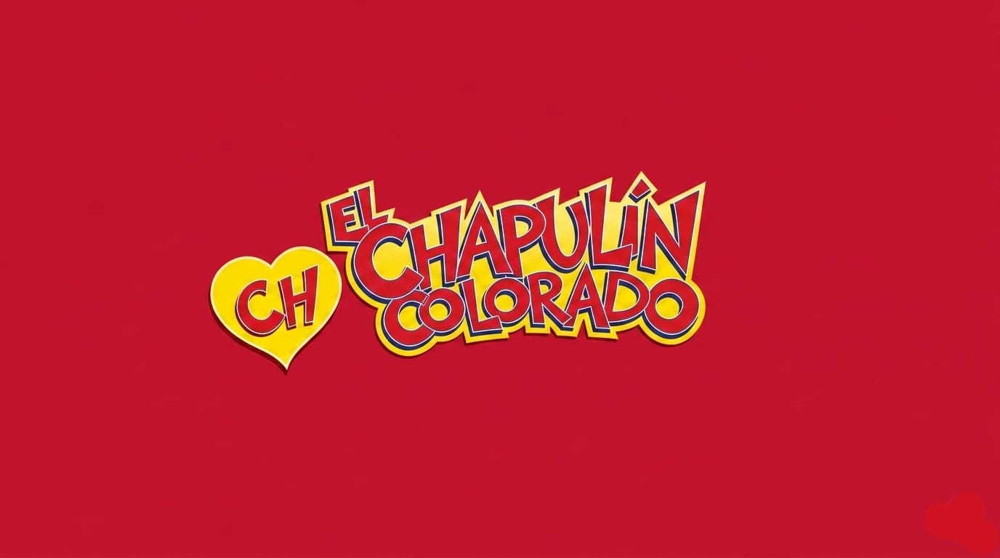
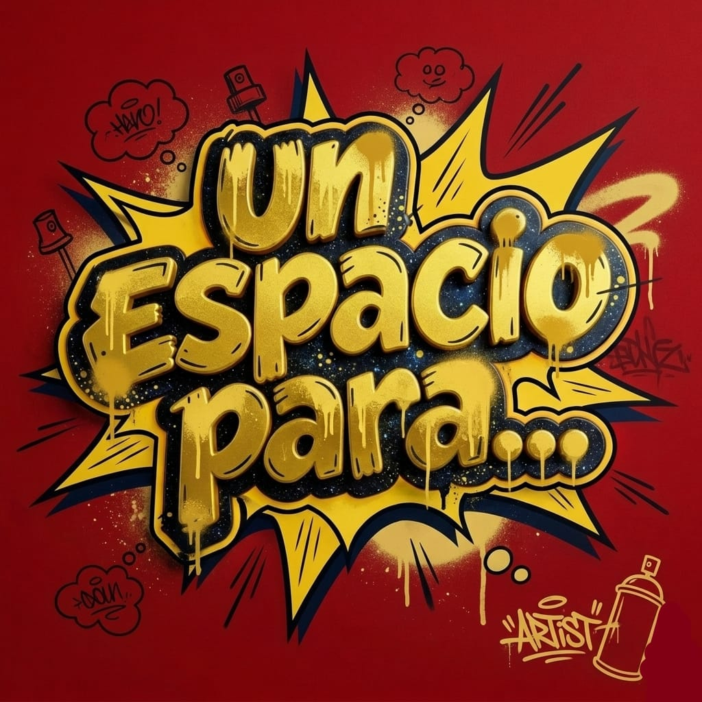
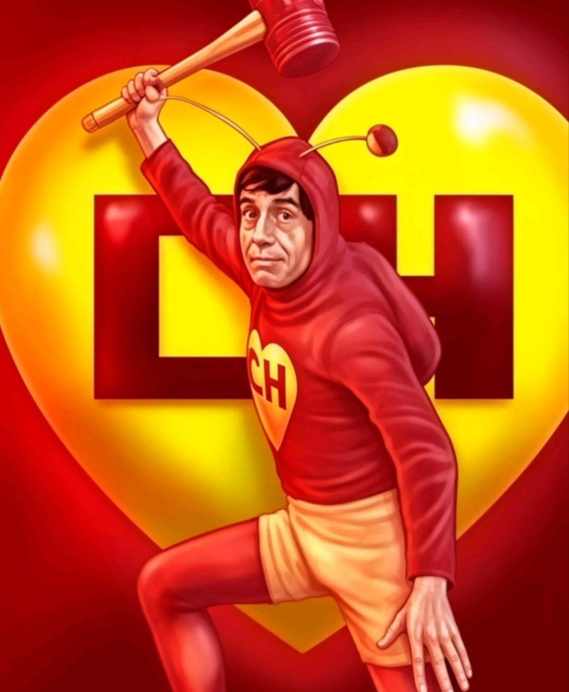
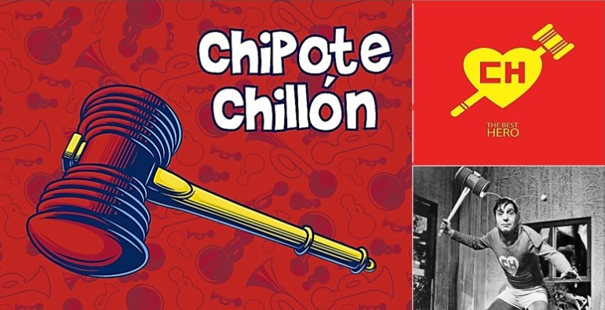
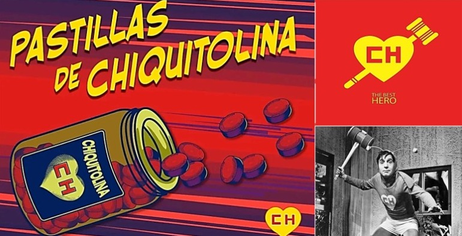
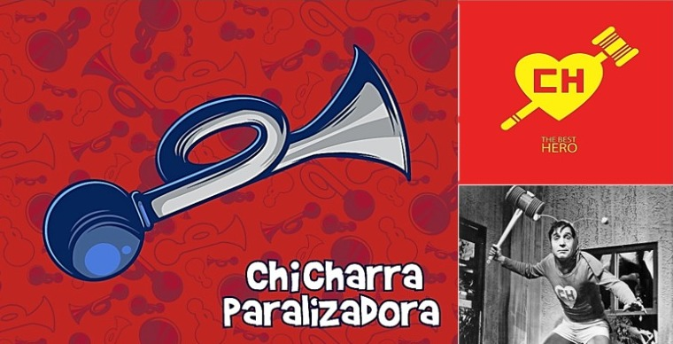
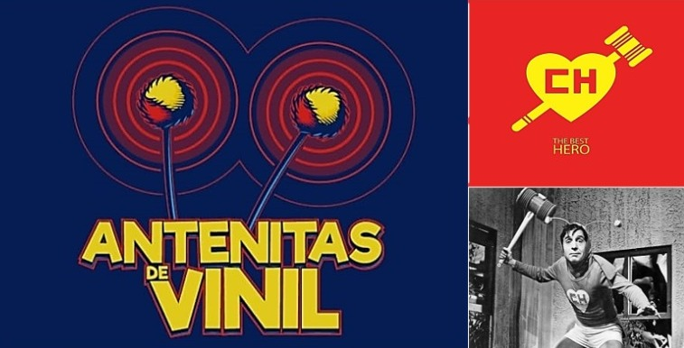
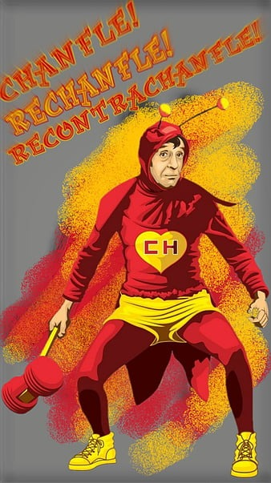
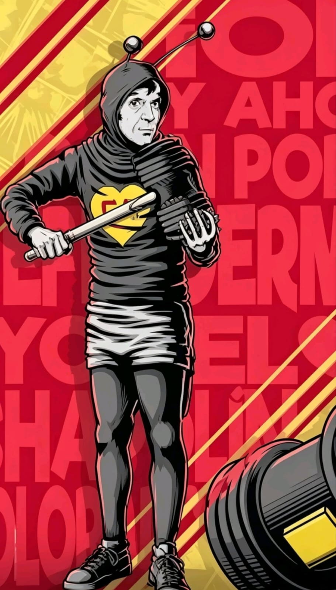

 |
 |
CAPACIDADES Y RECURSOS
RECURSOS
Para que un héroe que "no posee superpoderes" pueda enfrentarse a las amenazas más diversas, desde piratas del siglo XVIII hasta marcianos tecnológicamente avanzados, necesita un equipo que desafíe las leyes de la lógica y la física. El arsenal del Chapulín Colorado no está diseñado para la destrucción, sino para el control de situaciones caóticas, basándose en la sorpresa, la reducción de escalas y la detección temprana de malas intenciones.


Cada herramienta en su cinturón y cada dispositivo en su uniforme cumplen una función táctica específica que compensa su falta de fuerza bruta. Estas armas son extensiones de su propia naturaleza: son impredecibles, a veces temperamentales y, en las manos correctas, capaces de desarmar al villano más temido mediante el recurso más poderoso de todos: la confusión absoluta del enemigo.
EL CHIPOTE CHILLÓN

Se trata de la principal arma de combate cuerpo a cuerpo del héroe, un mazo de alta resistencia que emite un sonido característico al impactar contra el objetivo. Su diseño equilibrado permite realizar ataques precisos que neutralizan a los criminales sin causar daños permanentes, funcionando más como una herramienta de disuasión que de destrucción. Dicen que el Chipote tiene una propiedad casi mística, ya que siempre aparece en las manos del Chapulín justo cuando este lo invoca, siendo capaz de derribar desde piratas espaciales hasta gánsteres de la peor calaña.
LAS PASTILLAS DE CHIQUITOLINA

Este compuesto químico de avanzada tecnología permite al Chapulín reducir su tamaño a unos pocos centímetros, facilitando misiones de infiltración y exploración en lugares inaccesibles. Al ingerirlas, el héroe adquiere una ventaja táctica basada en el sigilo, aunque esto lo vuelve vulnerable ante amenazas cotidianas que, a esa escala, se vuelven letales, como ratones o corrientes de aire. Escuché por ahí que el efecto es estrictamente temporal, lo que genera una tensión constante ante el riesgo de recuperar su tamaño original en espacios reducidos o momentos inoportunos.
LA CHICHARRA PARALIZADORA

Es un dispositivo de control de masas capaz de detener el movimiento de cualquier ser vivo u objeto mediante una frecuencia sonora específica. Con un solo golpe de la corneta, el objetivo queda completamente congelado en el tiempo y el espacio, manteniendo la posición exacta en la que se encontraba; para revertir el efecto, es necesario aplicar dos golpes rápidos. Me contaron que su mayor peligro no es el arma en sí, sino la memoria del héroe, quien frecuentemente olvida a quién ha paralizado, dejando a villanos y civiles en posiciones ridículas durante horas.
LAS ANTENITAS DE VINIL

Son el sistema de radar y detección de amenazas más sofisticado del traje, conectadas directamente al sistema nervioso del héroe para alertarlo sobre peligros cercanos. Estas antenas tienen la capacidad de detectar la presencia de enemigos, vibraciones sospechosas e incluso pueden captar señales de radio o traducir idiomas extranjeros según la necesidad del operativo. Me dijeron que, aunque son extremadamente sensibles y nunca fallan al detectar el miedo, el Chapulín a veces interpreta mal sus señales, lo que lo lleva a asustarse de su propia sombra antes que del villano.

